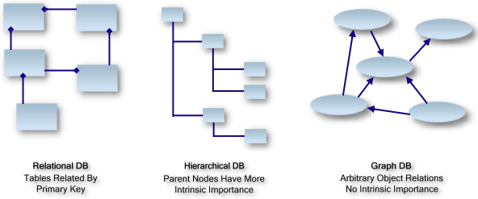
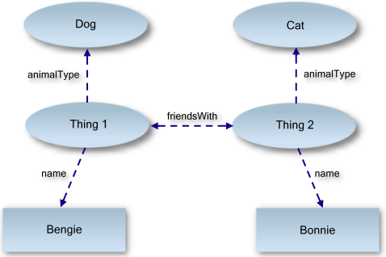

Abstract
- Similar to relational database, graph database is the data storage model that lays the foundation for a semantic web.
- Use graph (nodes and edges) to represent data entities and the relationships inbetween.
- Better at handling associative data sets and can scale more naturally than other types of database.
The Graph Database

- Structures
- Graph databases are based on graph theory, and employ nodes, edges, and properties.
- Nodes represent entities such as people, businesses, accounts, or any other item to be tracked. They are roughly the equivalent of the record, relation, or row in a relational database.
- Edges are the directed lines that connect nodes to other nodes and represent the relationship between them. Edges are the key concept in graph databases, representing an abstraction that is not directly implemented in other systems.
- Properties are germane information that relate to nodes or edges. For example, if DBPedia were one of the nodes, it might be tied to properties such as its website and creator. Properties are essentially relationships having pointers to the corresponding documents.
- Features
In a graph database, no element of data has more importance or precedence over other elements. Thus this "flat" structure brings graph DB with a lot of advantages.
- Can scale more naturally to large data sets.
- More suitable to changing data with evolving data schemas.
- Can map complex relationships using less storage space and supports faster operations.
Data Graph Example
For example, we woud like to define entities and relationships as follow:
- Bengie is a dog.
- Bonnie is a cat.
- Bengie and Bonnie are friends.
